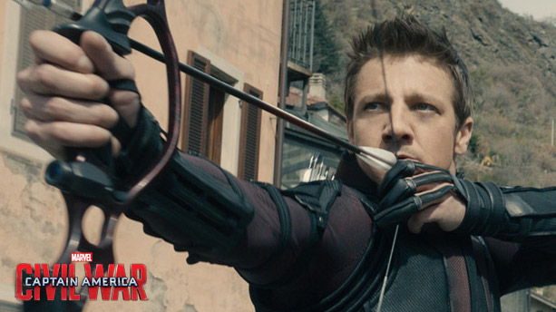

Visión es un superhéroe de los cómics Marvel, miembro destacado del supergrupo de los Vengadores.
En la película de 2015 The Avengers: Age of Ultron se puede ver a Visión, interpretado por el actor Paul Bettany, quien ya antes había prestado su voz para el personaje de J.A.R.V.I.S. en la trilogía de Iron Man y en Los Vengadores (2012) y su secuela Avengers: Age of Ultron. Dentro de la trama de la película, Visión es construido para ser el cuerpo definitivo de Ultrón, formado por un tejido sintético de alta tecnología combinado con vibranium, creado por la doctora Helen Cho, y que le otorgaba la capacidad de regenerarse, atravesar materia sólida, cambiar su densidad corporal, volar y obtener súper fuerza. Además, en su frente posee la Gema de la Mente, la cual le otorga consciencia propia, una gran capacidad de pensamiento y le permite lanzar rayos de energía. Finalmente, Visión es rescatado por los Vengadores, que le activan a partir de la inteligencia artificial de Tony Stark, J.A.R.V.I.S., y decide luchar junto a ellos para detener a Ultrón.
CIVIL WAR
La Viuda Negra ("Black Widow" en inglés) es un personaje ficticio que pertenece a la Marvel Comics. Dentro del Universo Marvel hay varias viudas negras, todas ellas pertenecen o han pertenecido a una organización espía rusa. La más importante es Natasha Romanova, que ya abandonó el grupo, para ejercer de agente de inteligencia y espionaje en organizaciones como S.H.I.E.L.D. y convertirse en una de las superheroínas más letales. Yelena Belova fue la sucesora de Natasha Romanova pero tras varios encuentros con la Agente, decidió dejar de usar el título por el que conocían a la superespía rusa, Viuda Negra.
CIVIL WAR
El Capitán América (en inglés Captain America) es un superhéroe ficticio que aparece en cómics estadounidenses publicados por Marvel Comics. Creado por los historietistas Joe Simon y Jack Kirby, el personaje apareció por primera vez en Captain America Comics #1 (marzo de 1941) de Timely Comics, predecesor de Marvel Comics. El Capitán América fue diseñado como un supersoldado patriota que luchaba frecuentemente contra las potencias del Eje en la Segunda Guerra Mundial, y fue el personaje más popular de Timely Comics durante el período de guerra. La popularidad de superhéroes se desvaneció después de la guerra, y el cómic del Capitán América fue descontinuado en 1950, con un breve resurgimiento en 1953. Desde que Marvel Comics revivió al personaje en 1964, el Capitán América se ha mantenido en publicación.
CIVIL WAR
Bucky es el nombre de varios personajes ficticios que fueron superhéroes enmascarados en el universo de Marvel Comics. El original, James Buchanan "Bucky" Barnes fue creado por Joe Simon y Jack Kirby como un compañero en Capitán América Comics #1 (marzo de 1941), publicado por el predecesor de Marvel, Timely Comics. En 2005, el original Bucky regresó de su supuesta muerte como Soldado de Invierno. En 2008, se convirtió en Capitán América después de que Steve Rogers aparentemente muriera, antes de regresar como el Soldado de Invierno una vez más, cuando Rogers estaba con vida
CIVIL WAR
Falcon, cuyo nombre real es Samuel Wilson, es un superhéroe ficticio que aparece en los cómics publicados por Marvel Comics. Creado por el escritor-editor Stan Lee y el artista Gene Colan, e introducido en Captain America #117 (septiembre de 1969), el personaje es el primer superhéroe afroamericano de la compañía. El personaje de Marvel previamente introducido de Black Panther es africano, originario del país ficticio de Wakanda. Falcon le siguió al primer personaje secundario afroamericano de la compañía, el soldado sin-superpoderes de la Segunda Guerra Mundial, Gabe Jones, y al primer personaje secundario regular, Joe Robertson de The Amazing Spider-Man.
CIVIL WAR
La Bruja Escarlata (Wanda Maximoff), es una superheroína ficticia que aparece en los cómics publicados por Marvel Comics. El personaje apareció por primera vez en X-Men #4 (1964) y fue creada por Stan Lee y Jack Kirby. Ella es la hija de Magneto, la hermana melliza de Quicksilver, y la media-hermana paterna de Polaris.
la Bruja Escarlata aparece por primera vez en los cómics de 16 años y sufriendo este síndrome. Debutando en la Edad de Plata de los Cómics, la Bruja Escarlata ha aparecido durante cinco décadas de continuidad Marve
CIVIL WAR

Ojo de Halcón (originalmente, Hawkeye) es un superhéroe de Marvel Comics creado por el guionista Stan Lee y el dibujante Don Heck para el número 57 (septiembre de 1964) de Tales of Suspense como un villano. Más tarde se unió a los Vengadores en Avengers #16 (mayo de 1965), grupo en el que ha militado desde entonces.
Su nombre real es Clint Barton. Lo que hace especial a Ojo de Halcón es su asombrosa pericia y su ojo desarrollado con el arco y las flechas, sus flechas trucadas, y su carácter pícaro y temerario.
CIVIL WAR